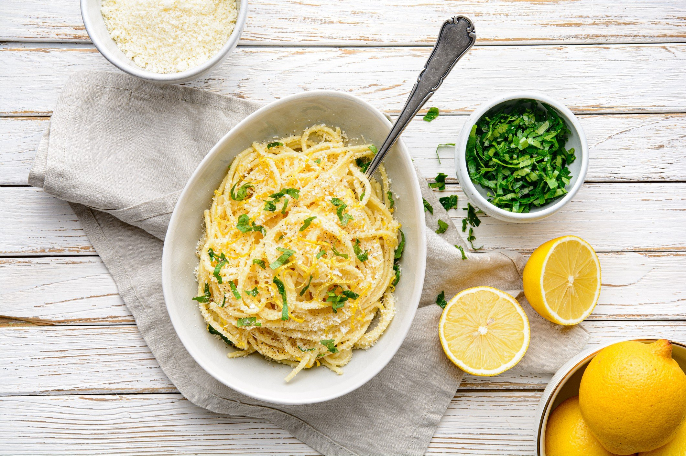

Pasta Limone

Description
Pasta Limone is a delicous dish from Italy. The freshness of citrus fruits and the
richness of the parmesan cheese result in the perfect meal for hot summer days!
In addition, it's cheap! It's easy! Just try it!
Ingridients (for two)
try the vegan version
- 250 gr Pasta
- 75 gr Parmesan Cheese
- 2 lemons (organic)
- 3 cloves of garlic
- half of a chili
- a spoonful of Butter
- a handful of parsely
- salt, pepper, oliveoil
Steps
- Preparation:
- chop garlic, parsely and chili
- grate lemon zest and parmesan
- squeeze lemons
- boil water, salt it (should be salty like the ocean)
- put the pasta in
- roast garlic and chili in oliveoil
- after 3 min, put a ladle of the pastawater to the garlic/chili
- let ist cook until the pasta is ready
- put the pasta, parmesan, lemonjuice and butter in the pan to garlic/chili
- maybe you have to add some pastawater
- add lemon zest and parsely, maybe the dish needs some salt and pepper